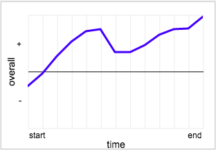

Touching Data
with AmpersandJS & Canvas
presented by Mat Tyndall
founder & ceo of tinj
Retrace
time-based video ratings
Why would we do this?
- Vizualizations are great for showing data
- But they can also be a great way to collect data
- Merging the visualization/interface makes data touchable
Priorities for Retrace
Mobile First
Work Everywhere*
Modular
Extendable
*IE9+
Key Technologies
Ampersand JS
HTML5 Canvas
Browserify
Ampersand.js

“A highly modular, loosely coupled, non-frameworky framework for building advanced JavaScript apps.”
AmpersandJS Guiding Principles
- Everything is a CommonJS module
- Everything is installed via npm
- Modern browsers by default (IE9+)
- Tiny module all the things!
- Optimize for minimal DOM manipulation and performance.
- Everything is MIT licensed
Ampersand Drawing Demo
Lets see some code...
Questions?
thanks!
Think any of this is cool? Reach out!
github.com/tinj/ampersand-drawing-demo
sign up to be notified of retrace at tinj.com